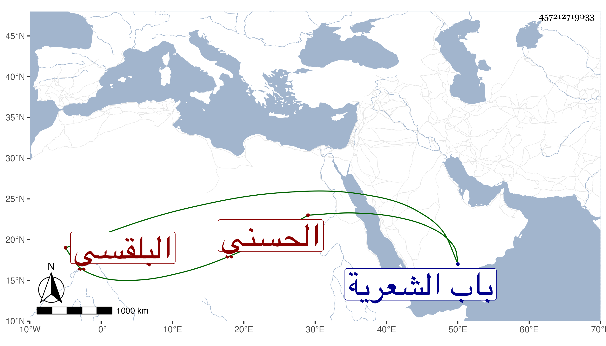

0902Sakhawi.DawLamic.ITO20230111-ara1.EIS1600.457212719033
Biography ID: 457212719033
115
عبد الحق بن علي بن الشريف الحسني البلقسي شيخها ووالد علي وأبي نصر وغيرهما . ممن انتمى لعبد الرحيم الابناسي وحسن حاله وقدر أنه تمرض عنده حتى مات في ليلة الجمعة ثاني عشر صفر سنة إحدى وتسعين وصلى عليه من الغد في مشهد حافل ودفن بجوار سيدي شهاب خارج باب الشعرية وقد جاز السبعين وكان في آخر عمره أحسن منه أوله سيما في هذه الميتة رحمه الله وعفا عنه .
